Analiza rješenja · JOI Spring Camp 2026 · Dan 2
JOI tura 2
O ovom članku
Tekst je prijevod službene japanske prezentacije rješenja, preoblikovan u članak. Slajdovi su ugrađeni kao slike; natpis pod svakim slajdom je prijevod teksta na njemu. Dijelovi označeni kao trenerska napomena nisu u izvornoj prezentaciji — dodani su da popune korake koje slajdovi preskaču ili samo skiciraju.
-
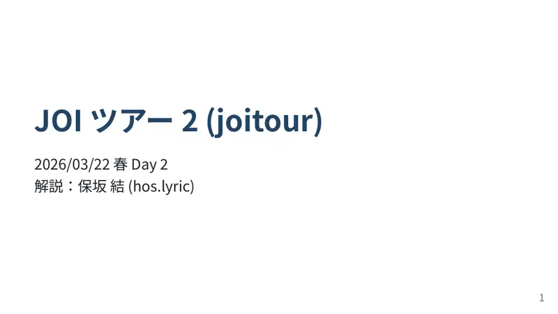
1Naslov; hos.lyric. -
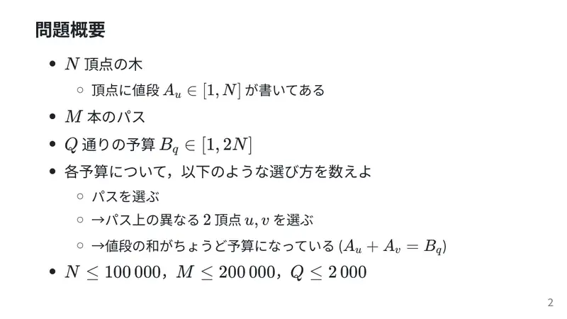
2Stablo s cijenama, $M$ putova, $Q$ budžeta; broj izbora (put, dva vrha) sa zbrojem $=B_q$. -
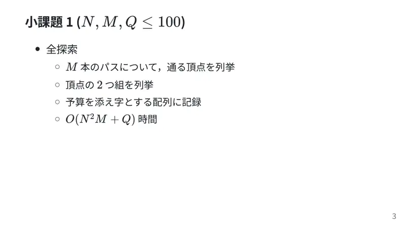
3Podzadatak 1: grubo — izlistaj vrhove puta i parove; zapisuj po budžetu. -
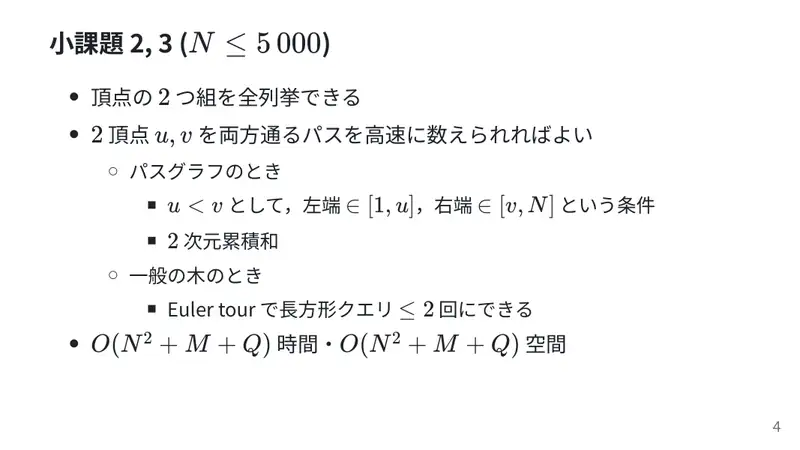
4$N\le5000$: svi parovi $(u,v)$; broj putova koji sadrže oba — na putu uvjet $S\le u,T\ge v$ (2D prefiksi), na stablu Eulerova tura i pravokutni upiti; $O(N^2+M+Q)$.
$Q=1$: Mo 16 bodova
-
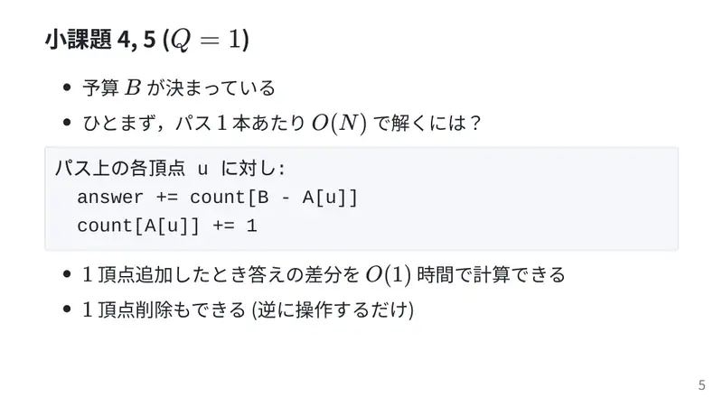
5Jedan budžet: dodaj vrh — ans += cnt[B−A[u]]; cnt[A[u]]++; uklanjanje obrnuto, $O(1)$. -
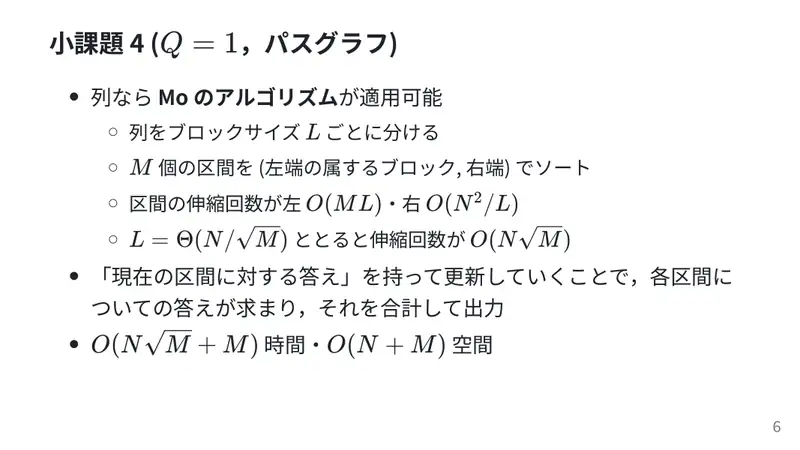
6Put-graf: Mo — blokovi veličine $L$, sortiraj po (blok lijevog kraja, desni kraj); $L=\Theta(N/\sqrt M)$ ⇒ $O(N\sqrt M)$ pomaka. -
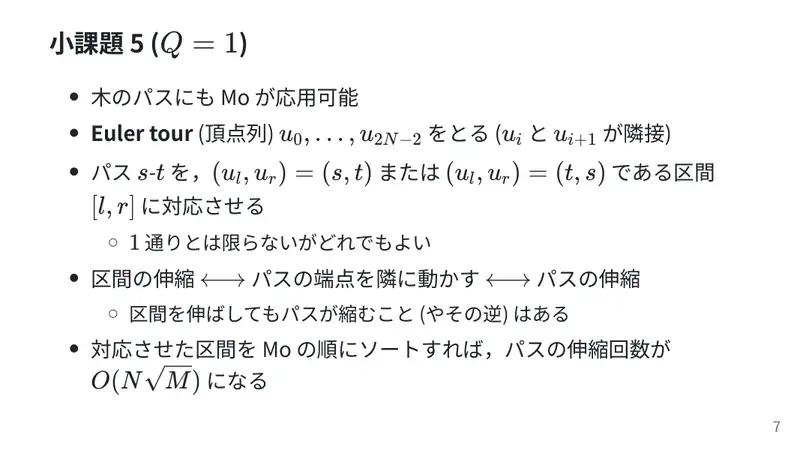
7Stablo: Eulerova tura vrhova $u_0..u_{2N-2}$; put $s$–$t$ ↔ interval s krajevima $s,t$ (bilo koji); pomak intervala za 1 = pomak kraja puta na susjeda (put može i skratiti). Mo-poredak ⇒ $O(N\sqrt M)$ pomaka. -
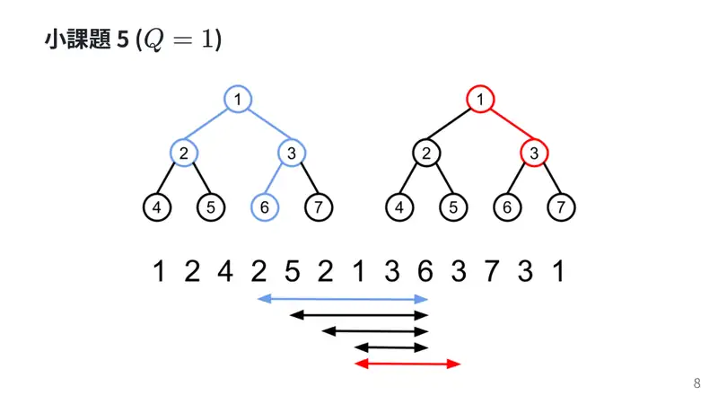
8Slika. -
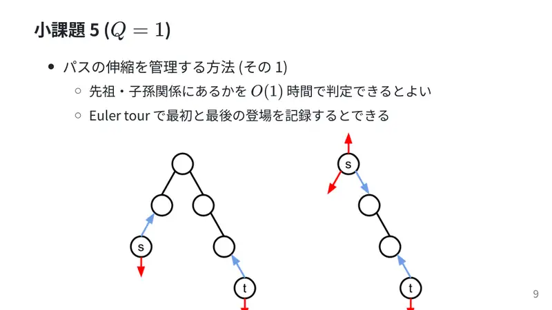
9Upravljanje: provjera predak/potomak u $O(1)$ (prvi i zadnji ulazak u turi). -
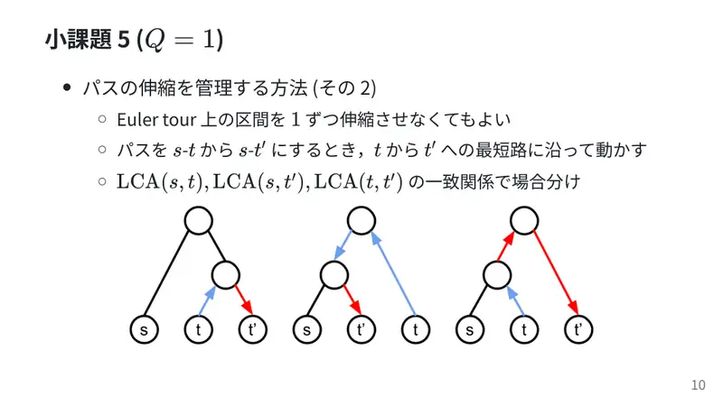
10Alternativa: ne pomiči po 1 nego pomakni $t\to t'$ duž staze, uz slučajeve po $\mathrm{lca}(s,t),\mathrm{lca}(s,t'),\mathrm{lca}(t,t')$.
Transponirani zadatak
-
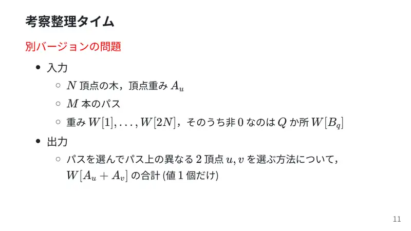
11Druga verzija: težine $W[1..2N]$ (ne-nula na $Q$ mjesta), traži se $\sum W[A_u+A_v]$ po svim izborima — jedan broj. -
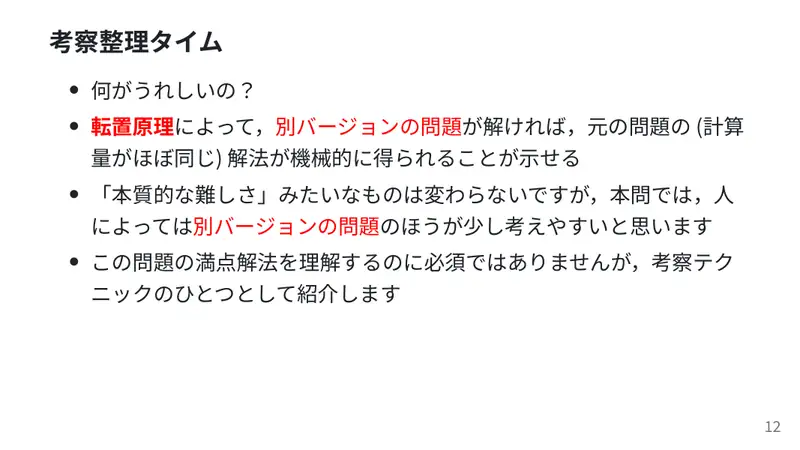
12Zašto? Transpozicijom se rješenje druge verzije mehanički prevodi u rješenje izvorne, iste složenosti; nekima je druga verzija lakša. -
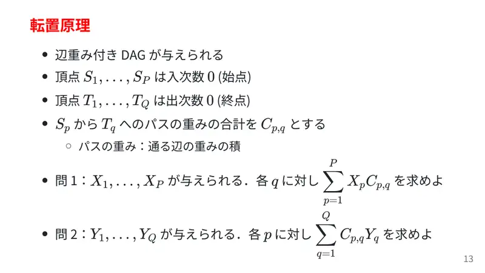
13DAG s težinama; izvori $S_p$, ponori $T_q$; $C_{pq}$ = zbroj težina putova. Problem 1: $X\mapsto\sum_pX_pC_{pq}$; problem 2: $Y\mapsto\sum_qC_{pq}Y_q$. -
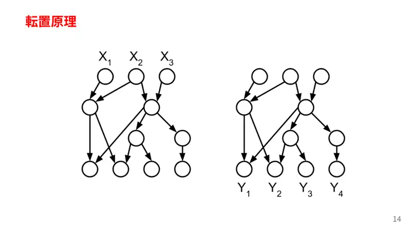
14Slika. -
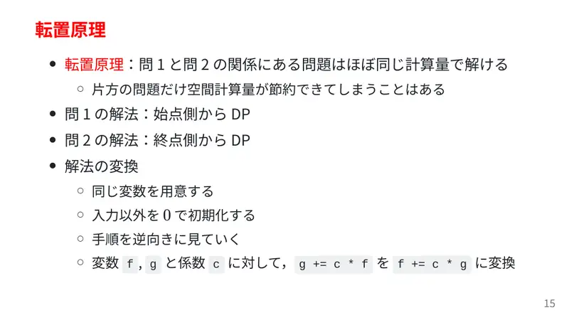
15Princip: oba se rješavaju jednakom složenošću (prostor može odstupati); DP od izvora ↔ DP od ponora; pretvorba: isti varijable, inicijaliziraj nule, koraci obrnuto, $g\mathrel{+}=cf$ postaje $f\mathrel{+}=cg$. -
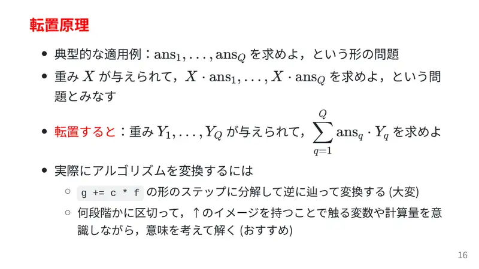
16Tipično: „izračunaj $\mathrm{ans}_1..\mathrm{ans}_Q$” = linearno preslikavanje ulaza $X$; transponirano: zadani $Y_q$, traži $\sum_q\mathrm{ans}_q Y_q$. Preporuka: razmišljaj u fazama umjesto mehanički. -
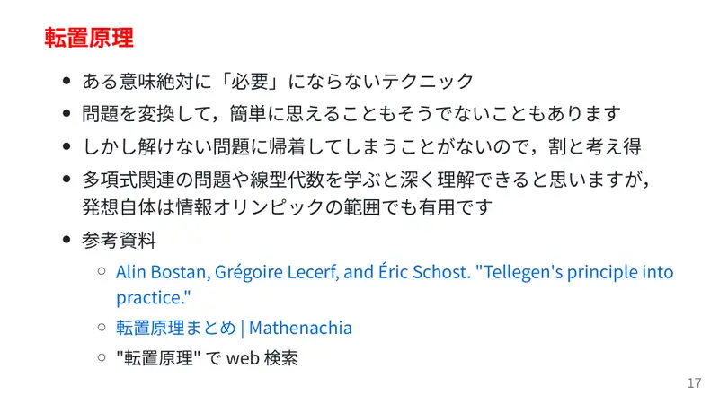
17Nikad „nužna” tehnika, ali nikad ne vodi u teži problem; vidi Bostan–Lecerf–Schost, „Tellegen's principle into practice”. -
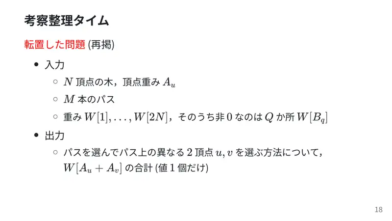
18Transponirani zadatak ponovno. -
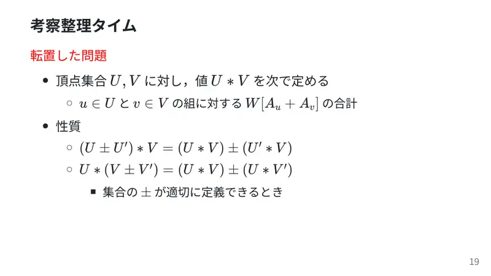
19Za skupove $U,V$: $U\ast V=\sum_{u\in U,v\in V}W[A_u+A_v]$; bilinearno u $\pm$.
$M\le1000$ 19 bodova
-
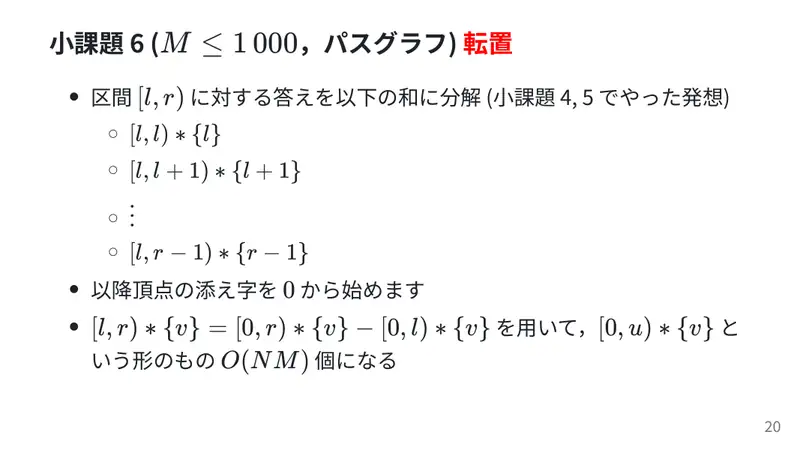
20Transponirano, put-graf: $[l,r)\ast$ rastavi kao $\sum_i[l,i)\ast\{i\}$, a $[l,i)\ast\{v\}=[0,i)\ast\{v\}-[0,l)\ast\{v\}$: $O(NM)$ članova oblika $[0,u)\ast\{v\}$. -
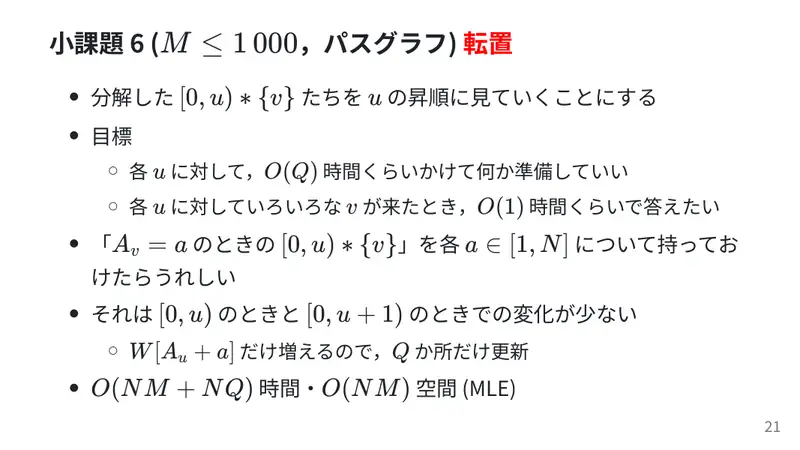
21Obrađuj po rastućem $u$; za svaki $u$ smiješ $O(Q)$ pripreme, po $v$ odgovor $O(1)$: čuvaj „$[0,u)\ast\{v\}$ za $A_v=a$” za svaki $a$; prijelaz $u\to u+1$ mijenja $Q$ mjesta. $O(NM+NQ)$, ali $O(NM)$ pamćenja (MLE). -
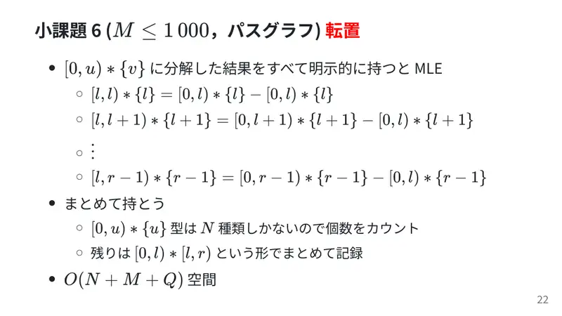
22Sažmi: tip $[0,l)\ast\{l\}$ samo prebroji ($N$ vrsta); ostatak zapiši kao $[0,l)\ast[l,r)$: $O(N+M+Q)$. -
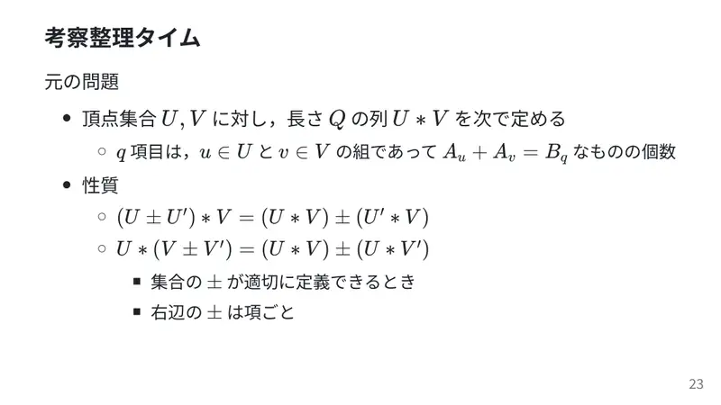
23Izvorni zadatak: $U\ast V$ je $Q$-vektor; bilinearnost po komponentama. -
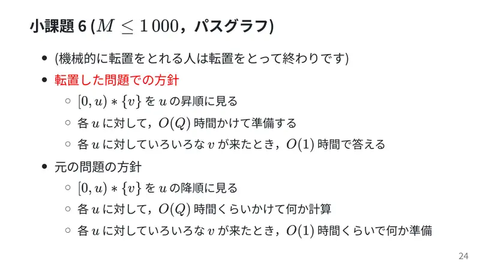
24Transponirani plan (rastući $u$, $O(Q)$ po $u$, $O(1)$ po $v$) ↔ izvorni plan (padajući $u$, $O(Q)$ po $u$, $O(1)$ po $v$). -
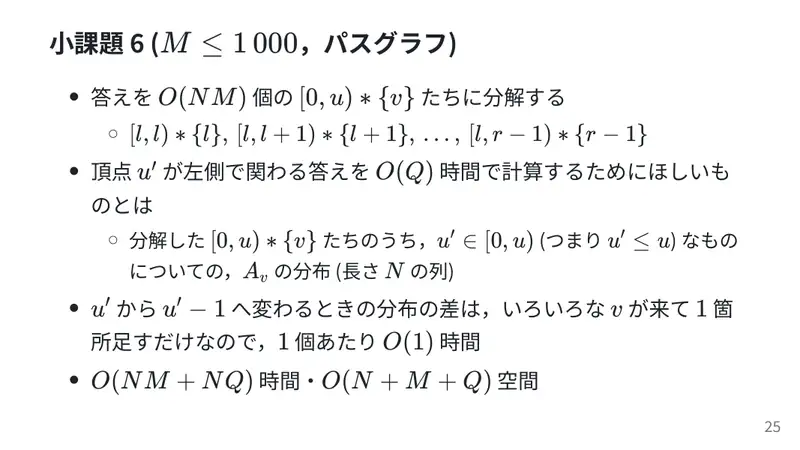
25Izvorni: vrhu $u'$ treba raspodjela $A_v$ po članovima $[0,u)\ast\{v\}$ s $u'\lt u$; pri $u\to u-1$ razlika je nekoliko dodavanja. $O(NM+NQ)$, $O(N+M+Q)$.
Puno rješenje 100 bodova
-
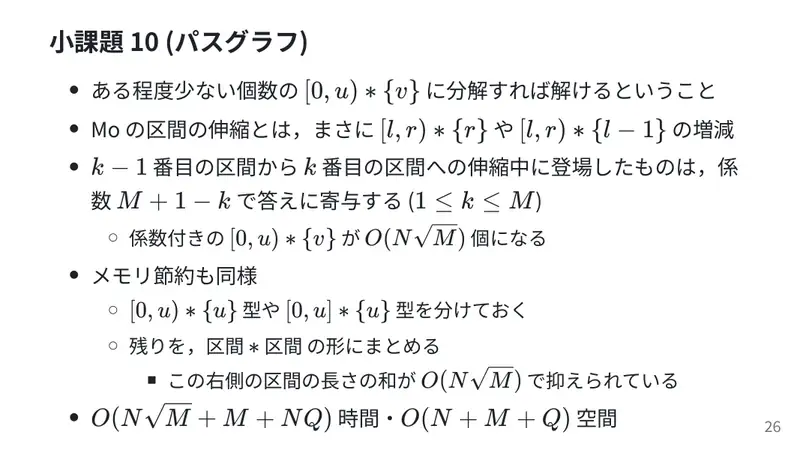
26Put-graf: Mo-pomaci su upravo $[l,r)\ast\{r\}$ i $[l,r)\ast\{l-1\}$; doprinos pri prijelazu na $k$-ti interval ima koeficijent $M+1-k$; $O(N\sqrt M)$ članova; sažimanje isto; $O(N\sqrt M+M\sqrt M+NQ)$, $O(N+M+Q)$. -
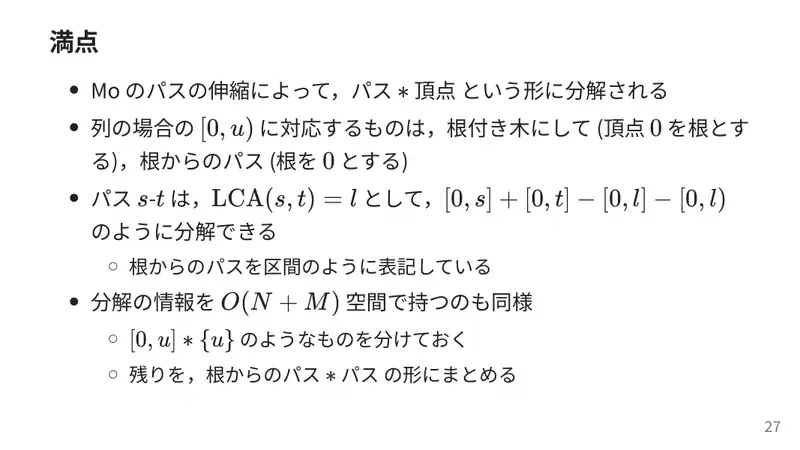
27Stablo: ukorijeni u 0; put $s$–$t$ s $l=\mathrm{lca}$: $[0,s]+[0,t]-[0,l]-[0,l)$; rastav čuvaj kao „korijenski put $\ast$ staza”. -
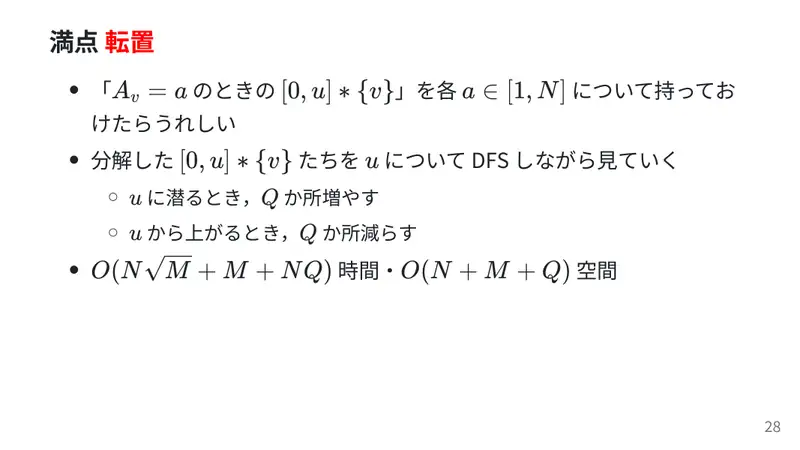
28Transponirano: DFS po $u$; spuštanje u $u$ mijenja $Q$ mjesta, izlazak vraća. -
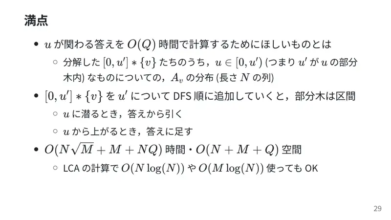
29Izvorno: vrhu $u$ treba raspodjela $A_v$ po članovima s $u'$ u podstablu $u$ — DFS poredak čini podstablo intervalom: pri ulasku oduzmi, pri izlasku dodaj. LCA smije biti $O(\log N)$. -
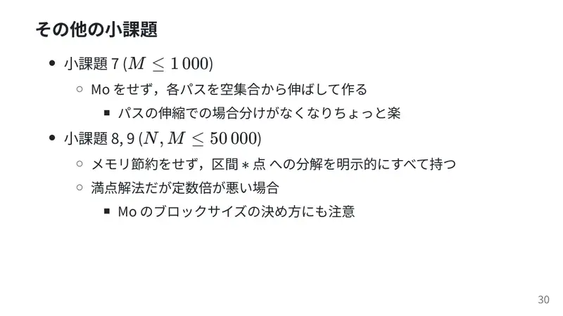
30Ostali podzadaci: $M\le1000$ bez Mo-a (svaki put gradi od praznog); $N,M\le50\,000$ bez sažimanja; pazi na konstantu i blok Mo-a. -
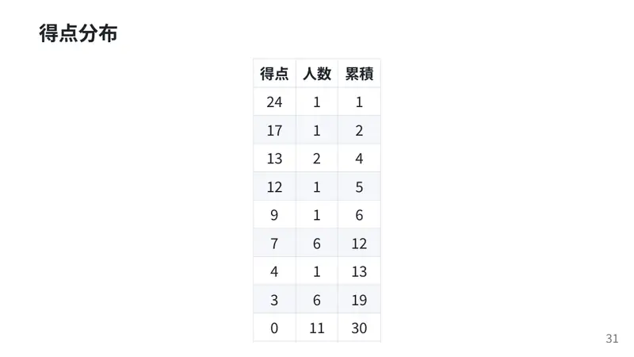
31Raspodjela bodova: najviše 24; 11 nula.
Sažetak
- Mo daje $O(N\sqrt M)$ elementarnih doprinosa „put ∗ vrh”; rastavi ih na korijenske putove i pamti sažeto.
- Jedan DFS s globalnom raspodjelom $G$ zbraja sve doprinose u $O(NQ)$; princip transpozicije objašnjava zašto to radi.